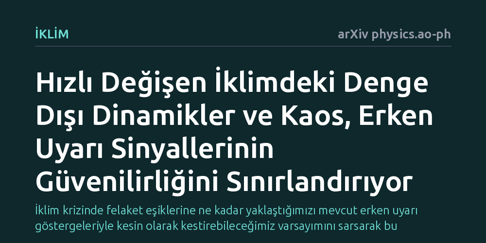

IKLIM · arXiv physics.ao-ph · 2026-09-11
İklim sistemindeki ani devrilme noktalarını önceden haber veren erken uyarı sinyallerinin, hızla değişen koşullarda ne kadar güvenilir olduğu incelendi. Kaotik etkiler ve denge dışı dinamikler nedeniyle bu sinyallerin kritik eşikleri öngörmekte yetersiz kalabileceği ve yeni yöntemlere ihtiyaç duyulduğu saptandı.
İklim krizinde felaket eşiklerine ne kadar yaklaştığımızı mevcut erken uyarı göstergeleriyle kesin olarak kestirebileceğimiz varsayımını sarsarak bu sinyallere körü körüne güvenilemeyeceğini gösteriyor.

İklim değişikliği tartışmalarında en çok endişe yaratan başlıklardan biri 'devrilme noktaları'dır. Grönland buzullarının erimesi, Atlas Okyanusu akıntılarının çökmesi ya da Amazon yağmur ormanlarının kurak savanlara dönüşmesi gibi süreçler, iklimin belirli bir eşik aşıldığında geri döndürülemez biçimde değişebileceğini düşündürür. Simülasyonlar, ılımlı emisyon senaryolarında bile bu tür ani geçişlerin yaşanabileceğini giderek daha güçlü biçimde ortaya koyuyor. Bu durum, hem karar vericilerin hem de kamuoyunun tehlikeye dair endişelerini haklı olarak artırıyor.
Ancak bu endişelerin merkezinde yanıtlanması güç bir soru duruyor: Uçurumun kenarına tam olarak ne zaman geleceğimizi önceden kestirebilir miyiz? Bilim insanları uzun süredir 'erken uyarı sinyalleri' adı verilen istatistiksel göstergeleri kullanarak, iklim sisteminin kritik bir eşiğe yaklaşıp yaklaşmadığını saptamaya çalışıyor. Fakat hızla değişen karmaşık bir iklim düzeninde bu sinyallerin ne kadar güvenilir olduğu ciddi bir tartışma konusudur.
Geleneksel erken uyarı sistemleri, matematiksel çatallanma teorisine dayanır. Bu yaklaşıma göre, yavaş değişen bir ortamda kararlı dengesini koruyan bir sistem kritik bir eşiğe yaklaştığında, küçük dış darbelerden sonra eski dengesine dönmesi giderek daha uzun sürer. 'Kritik yavaşlama' olarak bilinen bu gecikme, verilerde artan dalgalanmalar ve içsel bağıntılar şeklinde kendini belli eder. Araştırmacılar, deniz suyu sıcaklığı veya atmosferik basınç gibi iklim verilerindeki bu istatistiksel işaretleri takip ederek devrilme anını yakalamayı hedefler.
Bu çalışmada araştırmacı, erken uyarı mantığını dinamik sistemler teorisi ve denge dışı istatistiksel mekanik merceğinden kuramsal bir teste tabi tutuyor. İklim modellerinin ve mevcut yöntemlerin dayandığı matematiksel kabulleri sorgulayarak, iklimin gerçekten teorilerin öngördüğü gibi yavaş ve dengeli adımlarla mı yoksa bambaşka bir dinamikle mi devrilmeye doğru sürüklendiğini irdeliyor.
Çalışmanın ortaya koyduğu temel sonuç, erken uyarı sinyallerinin hızla değişen bir dünyada ciddi bir kısıtla karşılaştığını gösteriyor. Mevcut sinyaller, sistemin yavaşça değişen bir kararlı denge durumunu adım adım takip ettiği varsayımına güvenir. Oysa insan kaynaklı sera gazı emisyonları iklimi o kadar hızlı değiştiriyor ki sistem hiçbir zaman kararlı bir dengeye ulaşamıyor; tam anlamıyla denge dışı dinamikler sergiliyor. Bu durum ve atmosferin doğasındaki kaos, kritik devrilme eşiklerinin sınırlarını belirsizleştirerek tahmin gücünü zayıflatıyor.
Ayrıca verilerden yerel kararlılık kaybını tespit etmeye çalışan bu sinyaller, iklimin çok boyutlu yapısında yetersiz kalabiliyor. Gerçek dünyada iklim sistemi tek bir alternatif duruma değil, aynı anda var olabilen birden çok kararlı duruma sahip olabilir. Yazar, çoklu kararlılık gösteren bu karmaşık yapıda yalnızca yerel kararlılığı izleyen erken uyarı yöntemlerinin yanıltıcı olabileceğini ve büyük resmi kaçırabileceğini vurguluyor.
Bu bulgular, iklim krizinde 'erken uyarı sinyallerini takip edip uçuruma varmadan hemen önce frene basarız' anlayışının tehlikeli bir yanılsama olabileceğini gösteriyor. Sinyallerdeki belirsizlikler, tehlike anı gelene kadar net bir işaret alamayabileceğimiz ya da yanlış alarmlarla karşılaşabileceğimiz anlamına geliyor. Bu durum devrilme noktası riskini azaltmıyor; aksine onları matematiksel olarak önceden haber almanın düşündüğümüzden çok daha zor olduğunu kanıtlıyor.
Araştırmacı, bu kısıtları aşabilmek için iklim modellerinde ve gözlemlerde doğrudan küresel kararlılık özelliklerini inceleyen yeni istatistiksel mekanik araçlarının geliştirilmesi gerektiğini belirtiyor. Ancak bu yöntemler geliştirilip doğrulanana kadar en güvenli yol, erken uyarı sistemlerinin bizi kurtarmasını beklemek yerine, sera gazı salımlarını hızla azaltarak sistemi bu bilinmez eşiklerden olabildiğince uzak tutmaktır.